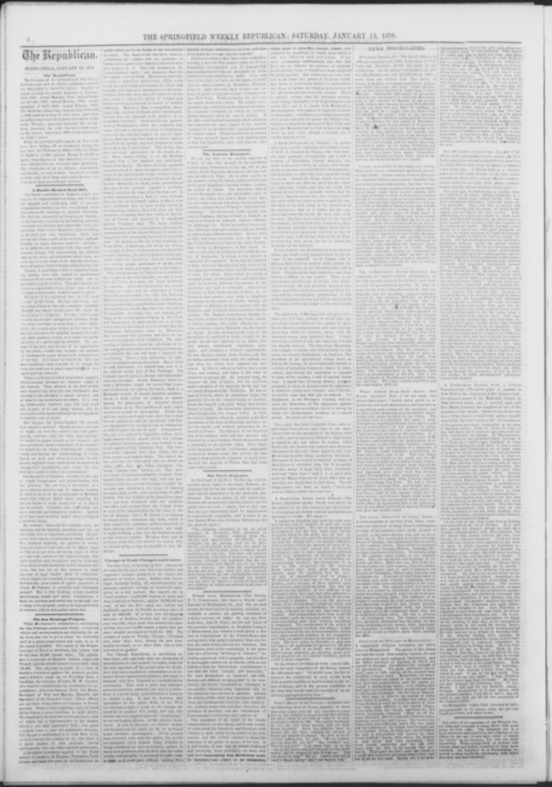

The American Annexation FightLa lucha por la anexión estadounidense
The eraLa era
After Spain withdrew, the annexation argument moved to Washington. President Ulysses S. Grant pushed a treaty in 1869 to annex the Dominican Republic and lease Samaná Bay, sent a commission in 1871 and fought for the plan in public. The American debate fills these pages as an American question — destiny, race, naval strategy and the smell of corruption. Its set pieces are here in full: the January 1871 debate on the commissioners' resolution, in which Sumner protested the whole measure and the House passed it 123 to 63 with an amendment declaring that nothing in it committed the government to annexation; and Sumner's speech against the treaty, reading into the record the manifestos of Cabral and the triumvirate against Báez.
Después de la retirada de España, el argumento de la anexión se mudó a Washington. El presidente Ulysses S. Grant impulsó en 1869 un tratado para anexar la República Dominicana y arrendar la bahía de Samaná, envió una comisión en 1871 y peleó el plan en público. El debate estadounidense llena estas páginas como una cuestión estadounidense: destino, raza, estrategia naval y olor a corrupción. Sus piezas centrales están aquí completas: el debate de enero de 1871 sobre la resolución de los comisionados, en el que Sumner protestó contra la medida entera y la Cámara la aprobó 123 a 63 con una enmienda que declaraba que nada en ella comprometía al gobierno con la anexión; y el discurso de Sumner contra el tratado, leyendo en el acta los manifiestos de Cabral y del triunvirato contra Báez.
In Santo Domingo the same plan read differently. President Buenaventura Báez had bargained with the country as if it were his own property, mortgaging its revenues and offering its bay — the treaty by which, in Sumner's words, 'the usurper pretended to sell his country' priced it at a million and a half dollars. The papers show the machinery: a popular vote on the treaty arranged under Báez's orders, reported as favored in the cities and opposed in the countryside; the Samana Bay Company's prospectus circulated privately in New York; and, after the Senate killed the treaty in 1870, the bay leased to the company anyway, ratified by the Dominican government in 1873.
En Santo Domingo el mismo plan se leía de otro modo. El presidente Buenaventura Báez había negociado con el país como si fuera su propiedad, hipotecando sus ingresos y ofreciendo su bahía: el tratado por el cual, en palabras de Sumner, «el usurpador pretendió vender su país» lo tasó en un millón y medio de dólares. Los periódicos muestran la maquinaria: una votación popular sobre el tratado organizada por orden de Báez, informada como favorable en las ciudades y opuesta en el campo; el prospecto de la Compañía de la Bahía de Samaná circulado en privado en Nueva York; y, después de que el Senado enterró el tratado en 1870, la bahía arrendada a la compañía de todos modos, con ratificación del gobierno dominicano en 1873.
Notice how rarely the American debate asks Dominicans what they want. The fight was conducted in Washington newspapers and Senate speeches; the Dominican answer — the Restoration generation's flat refusal to be sold — has to be read between the lines, and against them. Lease schemes around Samaná dragged on until 1874.
Nótese cuán rara vez el debate estadounidense pregunta a los dominicanos qué quieren. La lucha se libró en periódicos de Washington y discursos del Senado; la respuesta dominicana — la negativa plana de la generación de la Restauración a ser vendida — hay que leerla entre líneas, y contra ellas. Los planes de arrendamiento sobre Samaná se arrastraron hasta 1874.
PlatesLáminas

The report covers the debate in both chambers on the joint

A perfect understanding is Said to exist between him and the revolutionary leaders in Hayti
Key articlesArtículos clave
The Dominican ResolutionLa resolución dominicana
The report covers the debate in both chambers on the joint resolution to appoint commissioners to Dominica. In the Senate, Senator Sumner protested against the whole measure as involving a bloody lawsuit, presented General Cabral's proclamation as evidence of civil war in the country, and proposed that the commissioners be required to inquire into that war and into the relations between Dominica and Hayti. In the House, Mr. Cox of New York denounced the scheme as a private, corrupt job, saying the annexation would be that of husks, because the kernels had already gone to private parties. Mr. Hoar of Massachusetts said he did not concur in the idea that respect for the President required them to support the measure, while Mr. Stevenson of Ohio favored acquiring Dominica for its minerals, harbors and fertile soil. A dispatch was read announcing that the Indiana Senate had instructed its senators, and requested its representatives, to vote against annexation. The House agreed to Mr. Ambler's amendment, declaring that nothing in the resolution committed the government to annexation, and then passed the resolution, 123 to 63.
El informe cubre el debate en ambas cámaras sobre la resolución conjunta para nombrar comisionados a Dominica. En el Senado, el senador Sumner protestó contra toda la medida por entrañar un pleito sangriento, presentó la proclama del general Cabral como prueba de la guerra civil en el país y propuso que se requiriera a los comisionados investigar esa guerra y las relaciones entre Dominica y Haití. En la Cámara de Representantes, el Sr. Cox, de Nueva York, denunció el plan como un negocio privado y corrupto, diciendo que la anexión sería de cáscaras, porque el grano ya había ido a parar a manos privadas. El Sr. Hoar, de Massachusetts, dijo que no compartía la idea de que el respeto al Presidente exigiera apoyar la medida, mientras que el Sr. Stevenson, de Ohio, favoreció adquirir Dominica por sus minerales, puertos y suelo fértil. Se leyó un despacho que anunciaba que el Senado de Indiana había instruido a sus senadores, y solicitado a sus representantes, votar contra la anexión. La Cámara aprobó la enmienda del Sr. Ambler, que declaraba que nada en la resolución comprometía al gobierno con la anexión, y luego aprobó la resolución, por 123 votos contra 63.
From Sumner's speech against the treaty: the manifestos of Cabral and the triumvirate against Báez, Cabral's electionDel discurso de Sumner contra el tratado: los manifiestos de Cabral y del triunvirato contra Báez, la elección de Cabral
From Sumner's speech against the treaty: the manifestos of Cabral and the triumvirate against Báez, Cabral's election by the first direct vote in Dominican history, Báez's Washington errand for arms and money, and the treaty by which 'the usurper pretended to sell his country' for $1.5 million.
Del discurso de Sumner contra el tratado: los manifiestos de Cabral y del triunvirato contra Báez, la elección de Cabral por el primer voto directo en la historia dominicana, la gestión de Báez en Washington en busca de armas y dinero, y el tratado por el que «el usurpador pretendió vender su país» por 1.5 millones de dólares.
A perfect understanding is Said to exist between him and the revolutionary leaders in HaytiSe dice que existe un perfecto entendimiento entre él y el
According to the Springfield weekly Republican on January 15, 1870, President Baez issued a proclamation directing district commandants to arrange a popular vote on the annexation treaty, which was strongly favored in city areas like San Domingo, Porto Platte, and Santiago, but opposed by rural populations fearing subjugation. The newspaper reported that Luperol was at Turks Island awaiting the outcome of the Haytian war, supported by revolutionary leaders who promised their resources against President Baez if they successfully overthrew Salnave. Additionally, the text noted that local resistance to annexation stemmed partly from the plan to admit the region as a territory rather than a state, a condition Gen. Babcock had communicated to Baez as non-negotiable.
Según el Springfield weekly Republican del 15 de enero de 1870, el presidente Báez promulgó un bando ordenando a los comandantes de armas celebrar una consulta plebiscitaria sobre el tratado de anexión, la cual gozaba de amplio favor en urbes como Santo Domingo, Puerto Plata y Santiago, pero hallaba resistencia en los campos por temor a una nueva dominación foránea. El rotativo indicaba que Luperón [Luperol] aguardaba en las islas Turcas el desenlace de la contienda haitiana, respaldado por jefes revolucionarios que empeñaron su concurso bélico contra el presidente Báez si lograban derrocar a Salnave. Asimismo, se señalaba que la oposición interna nacía en parte de la pretensión de anexar el país en calidad de simple territorio y no como Estado de la Unión, condición que el general Babcock transmitió a Báez como innegociable.
ErasEras · The era's articlesLos artículos de la era · On the timelineEn la cronología